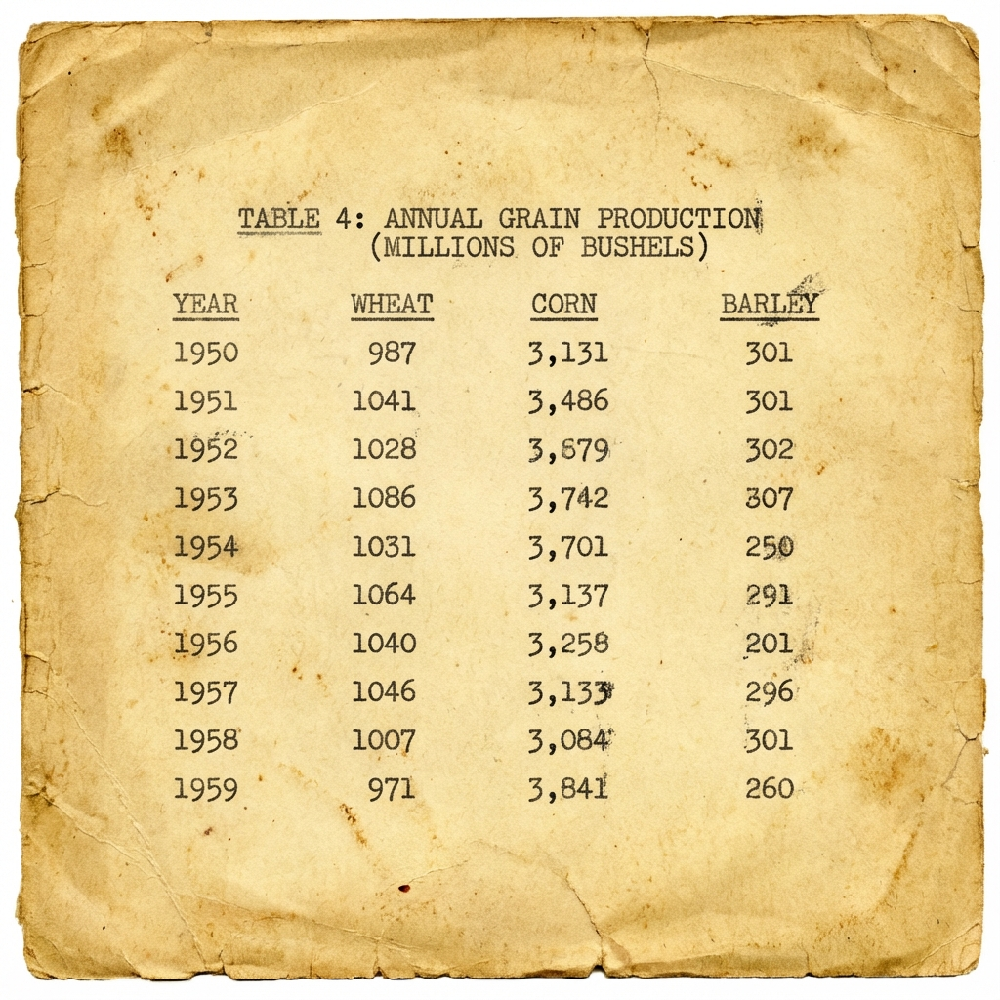

# --- STUDENT AREA ---
# Variable: instructions
# Write your prompt instructions below.
instructions = """
Attach the image of the yearbook table.
Extract the data into a CSV format.
Ensure the 'Year' column is an integer.
Clean any number formatting (e.g., remove commas from '3,131' to make it '3131').
"""
# --------------------
# Simulating the call (In a real scenario, we'd pass the image bytes too)
# For this exercise, we test the text prompt logic against a text-only model or VLM.
# Here we use a text instruction to see how a model *plans* to do it.
# NOW UPDATED: actually passing the image to the VLM!
response = query_hf(instructions, image_path="yearbook.png")
if 'error' in response:
print("NOTE: The free Hugging Face Router API may not support VLM requests currently.")
print(f"API Error: {response['error']}")
print("Proceeding with mock data or skipping this step for the exercise.")
else:
print(response)LLM Tools: Hands-on Exercises
Track 1: Digital Archivist
Exercise 1: Multimodal Extraction
Exercise 1 Task: You found this dusty yearbook page in the archives.
Goal: Convert it to a clean CSV.

Prompt Challenge: Write a prompt that ensures the “Year” column is an integer and numbers like “3,131” are parsed as 3131.
Exercise 2: The Solow Simulator
Exercise 2 Task: Construct a system prompt that teaches the model how to use the run_solow tool.
Goal: The model should output the correct JSON tool call for this user query:
User: “Simulate the economy if savings double to 40% and population grows at 2%.”
# --- STUDENT AREA ---
# Variable: tool_definition
# Define the tool schema for the model to understand.
tool_definition = {
"name": "run_solow",
"description": "Simulates GDP per capita using the Solow-Swan growth model.",
"parameters": {
"type": "object",
"properties": {
"savings_rate": {"type": "number", "description": "Savings rate (0.0 to 1.0)"},
"pop_growth": {"type": "number", "description": "Population growth rate (0.0 to 1.0)"}
},
"required": ["savings_rate", "pop_growth"]
}
}
# Variable: system_prompt
# Write instructions to force the model to output ONLY the JSON for the tool call.
system_prompt = f"""
You are an economic simulation assistant.
You have access to the following tool:
{json.dumps(tool_definition)}
If the user asks for a simulation, output a JSON object with the tool name and arguments.
Format: {{"tool": "run_solow", "arguments": {{ ... }} }}
Do not output any other text.
"""
# --------------------
query = "Simulate the economy if savings double to 40% and population grows at 2%."
response = query_hf(f"[System: {system_prompt}]\nUser: {query}")
# Helper to parse the LLM's JSON output (which might be messy)
# In a real app, we'd use a robust parser or the provider's tool-calling API.
try:
# Parse OpenAI format
if 'choices' in response and len(response['choices']) > 0:
model_text = response['choices'][0]['message']['content']
else:
model_text = str(response)
print(f"Raw Model Response: {model_text}")
# We'll just extract the JSON part here for simplicity if it includes other text
# Simple heuristic: find the first '{' and valid JSON
import re
match = re.search(r'\{.*\}', model_text, re.DOTALL)
if match:
tool_call_json = json.loads(match.group(0))
else:
tool_call_json = {"tool": "error", "arguments": {}}
print("Could not parse JSON from model output.")
except Exception as e:
tool_call_json = {"tool": "error", "arguments": {}}
print(f"Error parsing model response: {e}")
# Execution Logic (Do not edit below)
if tool_call_json.get("tool") == "run_solow":
args = tool_call_json.get("arguments", {})
if args:
result = run_solow(**args)
# Visualization
plt.figure(figsize=(8,4))
plt.plot(result, label=f"s={args.get('savings_rate')}, n={args.get('pop_growth')}")
plt.title("Solow Growth Model Simulation")
plt.xlabel("Year")
plt.ylabel("GDP per Capita")
plt.legend()
plt.grid(True)
plt.show()
print(f"Final GDP per Capita: {result[-1]:.2f}")
else:
print("Arguments missing.")
else:
print("Model did not call the correct tool.")
print("Parsed:", tool_call_json)Track 2: Market Analyst
Exercise 1: Technical Analysis
Exercise 3 Task: Your hedge fund needs an automated sentiment tagger.
Goal: Analyze this chart.

Prompt Challenge:
- Identify the Trend (Bullish/Bearish).
- Locate the Support Level (Visual estimation).
- Output as
{ "sentiment": "...", "support": 1000 }.
# --- STUDENT AREA ---
# Variable: analysis_prompt
# Write the prompt to extract sentiment and support level.
analysis_prompt = """
Analyze the stock chart data provided.
1. Determine if the trend is Bullish or Bearish.
2. Estimate the support level.
3. Return the result strictly as a JSON object: { "sentiment": "...", "support": <number> }
"""
# --------------------
# Simulating the call
response = query_hf(
analysis_prompt,
image_path="stock_chart.png"
)
if 'error' in response:
print("NOTE: Vision model unavailable on free tier. Using mock response for continuity.")
# Mock response for the student to see what it WOULD look like
print("""{
"choices": [
{
"message": {
"content": "{\n \"sentiment\": \"Bullish\",\n \"support\": 1050\n}"
}
}
]
}""")
else:
print(response)Exercise 2: Option Pricing
Exercise 4 Task: Create a tool definition and prompt to handle option pricing requests.
Goal: The model should trigger the black_scholes tool for this query:
User: “Price a call option for Apple. Strike is 250, expiring in 30 days.”
# --- STUDENT AREA ---
# Variable: pricing_tool_def
pricing_tool_def = {
"name": "black_scholes",
"description": "Calculates call option price using Black-Scholes.",
"parameters": {
"type": "object",
"properties": {
"ticker": {"type": "string", "description": "Stock symbol (e.g. AAPL)"},
"strike": {"type": "number", "description": "Strike price"},
"expiry_days": {"type": "integer", "description": "Days to expiration"}
},
"required": ["ticker", "strike", "expiry_days"]
}
}
# Variable: pricing_system_prompt
pricing_system_prompt = f"""
You have access to the following financial tools:
{json.dumps(pricing_tool_def)}
To use a tool, output valid JSON: {{"tool": "tool_name", "arguments": {{...}}}}
Only output the JSON.
"""
# --------------------
query = "Price a call option for Apple. Strike is 250, expiring in 30 days."
response = query_hf(f"[System: {pricing_system_prompt}]\nUser: {query}")
# Parsing logic
try:
import re
# Parse OpenAI format
if 'choices' in response and len(response['choices']) > 0:
text = response['choices'][0]['message']['content']
else:
text = str(response)
match = re.search(r'\{.*\}', text, re.DOTALL)
if match:
formatted_call = json.loads(match.group(0))
else:
formatted_call = {}
except (KeyError, json.JSONDecodeError, AttributeError):
formatted_call = {}
# Execution Logic (Do not edit below)
if formatted_call.get("tool") == "black_scholes":
args = formatted_call.get("arguments", {})
price = black_scholes(**args)
print(f"Calculated Option Price for {args.get('ticker')}: ${price}")
else:
print("Model failed to call the tool.")
print("Output:", response)```